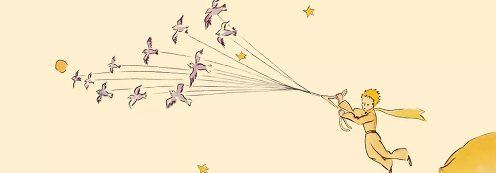

The Little Prince Notes
My First Webpage using HTML
A vaild HTML5 webpage for notes and images taken from a book "The Little Prince"
Fundamentals of Web-Based Multimedia Communications: Imagining the Internet’s Interface | Fall 2022
A vaild HTML5 webpage for notes and images taken from a book "The Little Prince"
In this second project, I created a website inspired by Early Internet Art.
In this third project, I redesigned Duke Sakai main page to demostrate the difference between mobile users and website users.

In this fourth project, I used JavaScript to do a certain Task.
In this fifth project, I built a personal website that is pro-personal branding or anti-personal branding or ironic personal branding or anywhere in-between
In the final project, I Incorporated all the skills I've learned in class to re-imagine a platform, site, or other interface of the internet.